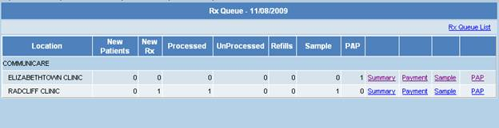
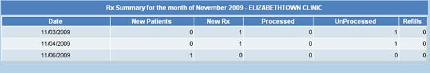
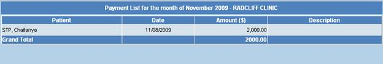
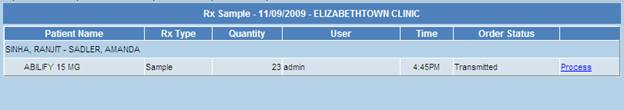
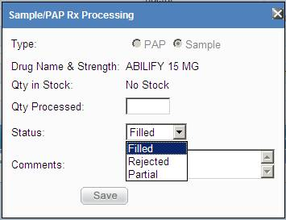
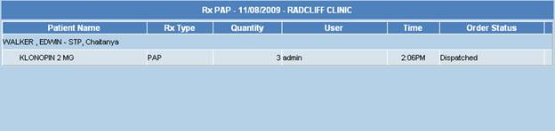
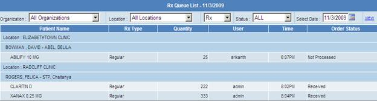

Rx Queue
Rx Queue option lists all incoming Prescriptions
summary for the day organized by Clinic Organization and Location. The list also gives the options to view
Samples, PAP, and Payments for each Clinic Location.
First row shows the Clinic Organization name and
below listed rows were the facilities of the clinic. Rx Queue is the summary of
the all the transactions taken place for the day. New patients column list the
newly added patients to the facility. The number of prescriptions written today
will be shown under New Rx column. Similarly no of processed, unprocessed,
refills of the requests were shown respectively. The next columns samples and
PAP type indicates the number of prescriptions of those type requests taken for
the day.

Image 1
Summary link corresponding to the location/facility
displays its prescription summary for the current month on day basis.

Image 2
Similarly the Payments done in the current month in
the respective facility/Location, displayed list includes payment date and
amount along with the Patient Name. Grand total of all the payments received is
calculated and displayed at the bottom.

Image 3
Sample link corresponding to a location in the
Image 1 navigates to the screen which displays Prescriptions of Type Sample and
its status

Image 4
If the Prescription status is “Transmitted” user is
provide with a link to Process the Prescription. To process click on the link
Process.

The Popup window allows the user to enter the
quantity to Process, if the stock is available and serving the requested
quantity then select Filled and Click on save to Process else if it is
partially filled then select Partial.
PAP link corresponding to a location in the Image 1
navigates to the screen which displays Prescriptions of Type PAP and its status. Processing of the PAP if the status is “Transmitted”
is same as Sample type.

Rx Queue list is the link provided in this webpage,
upon user click it navigates to a page were the user is provided with the
facility to view complete Prescriptions summary of a selected day. There are
several features available in this form. User can view list of Prescriptions of
specific Clinic Organization and Location, options to view samples, PAP,
Regular type and search based on Prescription status.
